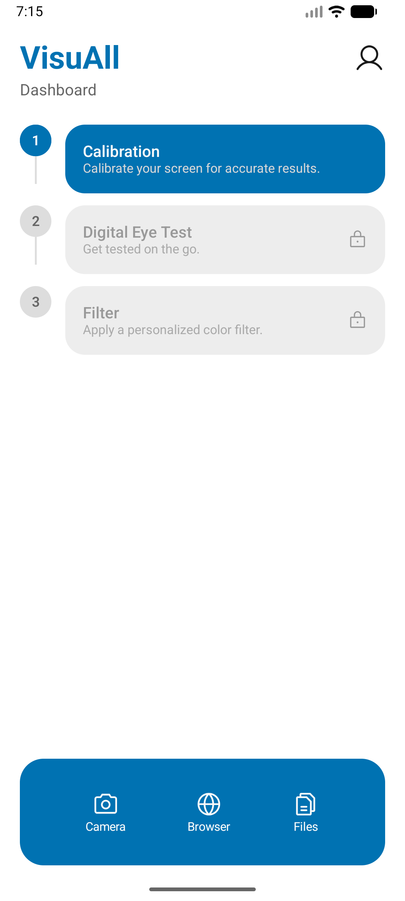
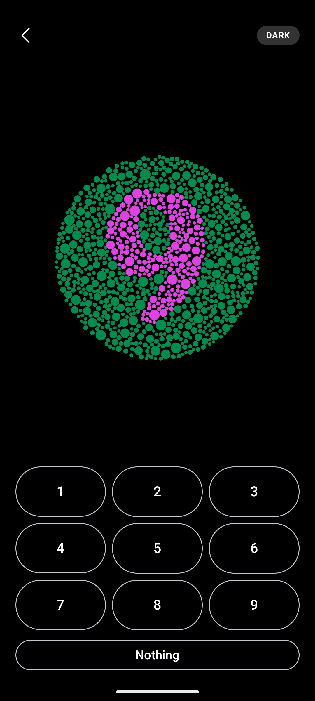

VisuAll is an integrated eye diagnostic and color enhancement system for color vision deficiency. Automated Ishihara-based screening paired with AI-assisted dynamic color remapping — built for Windows and mobile.
Free download · Ishihara-based screening · Real-time enhancement
Run a validated, automated eye-screening test, then let the AI-driven engine apply personalized Daltonization filters across your entire display — in real time, system-wide.
Download for WindowsTake the Ishihara-based screening on the go and apply in-app color enhancement tuned to your specific visual profile — anytime, anywhere.
Get it on Android
The same clinical-grade diagnosis-to-enhancement workflow, designed to feel right at home on iOS with smooth, calibrated visual adjustments.
Download on the App Store
Share your experience with color vision accessibility. Your responses guide our screening accuracy and color enhancement — it only takes a few minutes.
Take the Survey